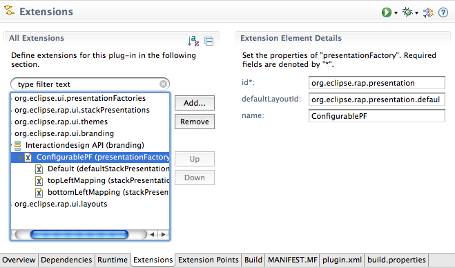

Eclipse RAP provides an API to change the look and feel of a RAP application. This article is a step-by-step guide to using the interaction design API to apply changes to your WorkbenchWindow components from a single bundle.
Let's begin by looking at what we can achieve with a RAP application and the
interaction design API:
First let's take a look at the list of elements that we'll be working with.
Finally, one additional but important requirement for a good look and feel is to change interaction concepts to match the new UI. To assist in this, the API provides an automatic service called personalization. For instance it hide all Viewactions by default and make it's visibility customizable.
The best place to start is to create a PresentationFactory. You'll need to
create an extension for the org.eclipse.ui.presentationFactories
extension point.

Here is the same as it appears in the plugin.xml.
<extension point="org.eclipse.ui.presentationFactories">
<factory
class="org.eclipse.rap.presentation.example.PresentationFactoryImpl"
id="org.eclipse.rap.presentation"
name="RAP Presentation">
</factory>
</extension>
The presentationFactory contains the following attributes.
org.eclipse.rap.ui.interactiondesign.PresentationFactory. It's
very important not to extend from the original
org.eclipse.ui.presentation.AbstractPresentationFactory as it does
not support the concepts described here.
org.eclipse.rap.ui.interactiondesign.PresentationFactory is
abstract, so you'll need to implement its abstract methods. Most are create
methods for different Managers, for example, the MenuBar MenuManager or the
Manager for the ToolBar. A ToolBar or MenuBar manager is a contribution manager which
realizes itself and its items in a control. In these implementations you can
change the look of the components such as styling a toolbar with icons and text
or making it transparent.
If you're not familiar with the original AbstractPresentationFactory you might
consider reading up on StackPresentations. You'll find a basic overview of the
partstack in the
Inside Workbench document.
The look and feel of a partstack can be changed using StackPresentations. In the
previous PresentationFactory the presentation had to be implemented
programatically. The interaction design API allows you to declare
StackPresentations as an extension for the extension point
org.eclipse.rap.ui.stackPresentations.

Here is the same as it appears in the plugin.xml.
<extension point="org.eclipse.rap.ui.stackPresentations">
<stackPresentation
id="org.eclipse.rap.presentation.macBarStackPresentation"
class="org.eclipse.rap.presentation.example.stacks.MacBarStackPresentation"
name="MacBar"
type="view"
actionClass="org.eclipse.rap.presentation.example.configaction.ExampleConfigAction"
actionIcon="icons/configAction.png"
menuIcon="icons/menuIcon.gif">
</stackPresentation>
</extension>
stackPresentation contain the following attributes:
org.eclipse.ui.presentation.StackPresentation. But to use
all the features of the interaction design API the
org.eclipse.rap.ui.interactiondesign.ConfigurableStack. should be
implemented. The ConfigurableStack is an abstract class and provides additional
methods i.e. to get the part's ToolbarManager. setCurrentStackPresentation( String id ). The id should be the id
of the presentation defined in the extension. When you call this method, you
will change the presentation of a whole stack to the presentation defined with
the given id. The reloading happens automatically.
org.eclipse.rap.ui.interactiondesign.ConfigurationAction. This is
an abstract class providing methods for personalization. For example, you can
use this to implement a popup dialog which allows the user to configure
viewaction visibility or the stack's presentation. To apply configuration
changes in your ConfigurableStack you will need to implement the Interface
org.eclipse.rap.ui.interactiondesign.IConfigurationChangedListener
and register it in the ConfigurationAction.
ConfigurationAction.
getMenuIcon() Method inside
the ConfigurableStack.
RAP provides the ability to define graphical layouts where you have control over
the elements such as the position of the workbench components like the toolbar,
menubar or the perspective switcher. The WorkbenchWindowAdvisors
createWindowContents( Shell ) method is one method, but the
result of this technique is a fixed coupling between the look and feel and your
application code.
You can now separate the application code and the look and feel by using the
org.eclipse.rap.ui.interactiondesign.IWindowComposer Interface. An
implementation of
org.eclipse.rap.ui.interactiondesign.PresentationFactory defines
the method createWindowComposer() which is called within the
WorkbenchWindow. This is a simple replacement for the advisor's method that
results in a loose coupling between application elements.
In order to organize graphical layout information such as images, colors, fonts
and position data, the following registry was created.
org.eclipse.rap.ui.interactiondesign.layout.LayoutRegistry
The LayoutRegistry is a singleton object which contains all existing layouts
represented by org.eclipse.rap.ui.interactiondesign.model.Layout
and org.eclipse.rap.ui.interactiondesign.model.LayoutSet.
A Layout can be declared by creating an extension for the extension point
org.eclipse.rap.ui.layouts.

And here is the same as it appears in the plugin.xml.
<extension point="org.eclipse.rap.ui.layouts">
<layout
id="org.eclipse.presentation.example.layout"
name="Example Layout">
<layoutSet
class="org.eclipse.rap.presentation.example.layoutset.HeaderLayoutSet2"
id="header.layoutset"
name="Header2">
</layoutSet>
</layout>
</extension>
Layout contains the following attributes:
org.eclipse.rap.ui.interactiondesign.layout.model.LayoutSet. The
object contains the information described above. Every layoutSet has a
maximum of one Layout as a parent and has the following attributes:
getLayoutSet( String id ) method.
org.eclipse.rap.ui.interactiondesign.layout.ILayoutSetInitializer.
This interface contains one method which is used to declared layout information
for a LayoutSet object. All IlayoutSetInitializers will be called during the
LayoutRegistry initialisation.
org.eclipse.layoutorg.eclipse.layoutSetLayoutSet.addFont( String key, Font font ) method in your
IlayoutSetInitializer implementation. We use "fontKey" as the key value. Here
is the source code for this font definition:
Button button = new Button( composite, SWT.NONE ); LayoutRegistry registry = LayoutRegistry.getInstance(); registry.setActiveLayout( "org.eclipse.layout" ); Layout layout = registry.getActiveLayout(); LayoutSet set = layout.getLayoutSet( "org.eclipse.layoutSet" ); button.setFont( set.getFont( "fontKey" );An alternative to accomplish this is theming, but the declarative layout give you more options such as defining images or position data. Another big advantage of using the declarative layout is that you can change a layout during runtime. And, to do this is just a two step process.
setActiveLayout( String id ) method within the
LayoutRegistry. This sets the active layout to the one with the given id.
The PresentationFactory will be called automatically and prompt a rebuild of the
styled components.
Different layouts can be activated from a central point by using the servlet
name. To activate a PresentationFactory and a Layout over a servlet name you
can use the
org.eclipse.rap.ui.branding extension
point.

And here is the same as it appears in the plugin.xml.
<extension point="org.eclipse.rap.ui.branding">
<branding
defaultEntrypointId="org.eclipse.rap.demo.entrypoint1"
favicon="icons/perspective.gif"
id="org.eclipse.rap.presentation.macBarBranding"
servletName="api"
themeId="org.eclipse.rap.presentation.macBarTheme"
title="Interactiondesign API">
<presentationFactory
defaultLayoutId="org.eclipse.rap.presentation.defaultlayout"
id="org.eclipse.rap.presentation"
name="ConfigurablePF">
<defaultStackPresentation
id="org.eclipse.rap.presentation.navigationPaneStackPresentation"
name="Default">
</defaultStackPresentation>
<stackPresentation
id="org.eclipse.rap.presentation.macBarStackPresentation"
name="topLeftMapping"
partId="topLeft">
</stackPresentation>
</presentationFactory>
</branding>
</extension>
As you can see, the presentationFactory is an element of the branding extension
and has the following attributes:
To style the look and feel of a RAP application many web components are also
required. For example, you may want to place the menubar on a header with
rounded corners or place the statusline in a nicely styled footer. You can
accomplish this with SWT Widgets but if you want to reuse these components,
you'll need to use also
org.eclipse.rap.ui.interactiondesign.layout.ElementBuilder. An
ElementBuilder is an abstract class which works hand in hand with the
declarative layout. You can extend it to build your own web components.
This is a two step process.
org.eclipse.rap.ui.interactiondesign.ElementBuilder and
implement its abstract methods. The most important method is
build(). You should build your component with SWT widgets when
build() is called. Every ElementBuilder is associated to a LayoutSet
id which will get from the LayoutRegsitry during the instantiation of the
ElementBuilder. During the instantiation the builder register itself in the
LayoutRegistry. If a new Layout is activated the dispose() methods
from all registered ElementBuilders will be called. This means that you need to
be sure you dispose your component correctly in this method. If not, switching the
Layout on-the-fly may not work correctly.
Composite parent = new Composite( aShell, SWT.NONE ); ElementBuilder builder = new YourBuilder( parent, "org.eclipse.layoutSet" );Be sure that your ElementBuilder implementation is initialized with a layoutSet you've associated with it.
This completes our tour of the interaction design API. For questions please feel free to visit the RAP newsgroup. We'd also be glad to hear about your experiences with this API and to have a look at the great new look and feels you're building for your apps.